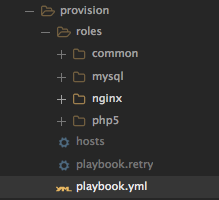

<!doctype html>
<html lang="en">

	<head>
		<meta charset="utf-8">

		<title>Industrialisation environnement de dev</title>

		<meta name="description" content="A framework for easily creating beautiful presentations using HTML">
		<meta name="author" content="Hakim El Hattab">

		<meta name="apple-mobile-web-app-capable" content="yes">
		<meta name="apple-mobile-web-app-status-bar-style" content="black-translucent">

		<meta name="viewport" content="width=device-width, initial-scale=1.0, maximum-scale=1.0, user-scalable=no, minimal-ui">

		<link rel="stylesheet" href="css/reveal.css">
		<link rel="stylesheet" href="css/theme/blood.css" id="theme">

		<!-- Code syntax highlighting -->
		<link rel="stylesheet" href="lib/css/zenburn.css">

		<!-- Printing and PDF exports -->
		<script>
			var link = document.createElement( 'link' );
			link.rel = 'stylesheet';
			link.type = 'text/css';
			link.href = window.location.search.match( /print-pdf/gi ) ? 'css/print/pdf.css' : 'css/print/paper.css';
			document.getElementsByTagName( 'head' )[0].appendChild( link );
		</script>

		<!--[if lt IE 9]>
		<script src="lib/js/html5shiv.js"></script>
		<![endif]-->
	</head>

	<body>

		<div class="reveal">

			<!-- Any section element inside of this container is displayed as a slide -->
			<div class="slides">
				<section data-markdown>
					<script type="text/template">
					# Vagrant & Ansible
					### Industrialisation des environnements de developpement
[@blackreaven](http://github.com/blackreaven).
				    </script>
				</section>
				<section data-markdown>
					<script type="text/template">
					## Plan

					* Vagrant
					* Ansible
					
					
					
				    </script>
				</section>
				<section>
					<section data-markdown>
						<script type="text/template">
						## Vagrant

						* Présentation
						* Installation
						* Première utilisation
						* Commandes
						* Plugins
						* Création de box custom 
						</script>
					</section>
					<section data-markdown>
						<script type="text/template">
						### Vagrant - Présentation

						Vagrant est un constructeur d'environnement de développement, qui s'appuie sur un système de virtualisation (Virtualbox, VmWare).

						Avantages :

						* Multi plateforme
						* Simple à utiliser
						* Réduit le temps d'installation d'un environnement
						* Tout le monde travaille sur le même environnement
						</script>
					</section>

					<section data-markdown>
						<script type="text/template">
						### Vagrant - Présentation

						Vagrant s'appuie sur des machines virtuelles packagées (box) qu'il clone pour avoir un environnement prêt à l'emploi.

							Box de base => Vm de dev 

						A partir d'un simple fichier de configuration on peut modifier le comportement de la vm de dev.
						</script>
					</section>

					<section data-markdown>
						<script type="text/template">
						### Vagrant - Installation

						* Installation d'un système de virtualisation
							* [https://www.virtualbox.org/wiki/Downloads](https://www.virtualbox.org/wiki/Downloads)
						* Installation de vagrant 
							* [https://www.vagrantup.com/downloads.html](https://www.vagrantup.com/downloads.html)

						</script>
					</section>
					<section data-markdown>
						<script type="text/template">
						### Vagrant - Première utilisation

							# Création du fichier de configuration
							vagrant init ARTACK/debian-jessie
							# Démarrage de la vm
							vagrant up
							# Connexion ssh sur la vm
							vagrant ssh

						</script>
					</section>
					<section data-markdown>
						<script type="text/template">
						### Vagrant - Configuration

							Vagrant.configure(2) do |config|
							  # Box de base et son url
							  config.vm.box = "ARTACK/debian-jessie"
							  config.vm.box_url = "https://atlas.hashicorp.com/ARTACK/boxes/debian-jessie"
							  # Configuration du réseau et des partages de fichiers
							  config.vm.network "private_network", ip: "10.0.0.50"
							  config.vm.hostname = "<project>.local"
							  config.hostsupdater.aliases = ["<project>.local", "admin.<project>.local", "api.<project>.local"]
							  config.vm.synced_folder "sources", "/var/www/<project>", type: "nfs"

							  # Définition des paramètres de la vm virtualbox
							  config.vm.provider "virtualbox" do |vb|
							    vb.memory = "2024"
							    vb.name = "<project>"
							    vb.customize ["modifyvm", :id, "--usb", "on"]
							    vb.customize ["modifyvm", :id, "--usbehci", "off"]
							  end
							end

						</script>
					</section>
					<section data-markdown>
						<script type="text/template">
						### Vagrant - Commandes

							# Création du fichier de configuration
							vagrant init <box>
							# Démarrage de la vm
							vagrant up
							# Connexion ssh sur la vm
							vagrant ssh
							# Arrêt de la vm
							vagrant halt
							# Destruction de la vm
							vagrant destroy
							# Lancement provisioning
							vagrant provision
							# Connaitre le statut de la vm du projet
							vagrant status
						</script>
					</section>
					<section data-markdown>
						<script type="text/template">
						### Vagrant - Commandes

							# Ajoute une box de base
							vagrant box add <url|path> <name>
							# Supprime une box de base
							vagrant box remove <name>
							# Liste les box
							vagrant box list

							# Connaître le statut de toutes les vm
							vagrant global-status

							# Installation d'un plugin
							vagrant plugin install <plugin>
							# Désintallation d'un plugin
							vagrant plugin uninstall <plugin>
							# Mise à jour d'un plugin
							vagrant plugin update <plugin>

						</script>
					</section>
					<section data-markdown>
						<script type="text/template">
						### Vagrant - Plugins

						Liste des plugins : 
						* [https://vagrant-lists.github.io/plugins.html](https://vagrant-lists.github.io/plugins.html)
						
						Plugins intéressants : 
						* vagrant-hostsupdater 
							* https://github.com/cogitatio/vagrant-hostsupdater
						* vagrant-sahara 
							* https://github.com/jedi4ever/sahara
						</script>
					</section>
					<section data-markdown>
						<script type="text/template">
						### Vagrant - Box Custom

						Il est possible de créer sa propre box vagrant qui servira de base :
						https://www.vagrantup.com/docs/boxes/base.html

						</script>
					</section>
				</section>
				<section>
					<section data-markdown>
						<script type="text/template">
						## Ansible

						* Présentation
						* Installation
						* Utilisation
						* Configuration
						* Création de rôles customs
						* Utilisation de rôles communautaires
						* Utilisation avec Vagrant
						</script>
					</section>
					<section data-markdown>
						<script type="text/template">
						## Ansible - Présentation

						Ansible est un outil d'automatisation. Il permet de gérer les configurations, le déploiement d'applications, les backups et de provisionner des serveurs.

						</script>
					</section>
					<section data-markdown>
						<script type="text/template">
						## Ansible - Installation

							sudo easy_install pip
							pip install ansible

						</script>
					</section>
					<section data-markdown>
						<script type="text/template">
						## Ansible - Configuration

						Ansible utilise deux fichiers pour sa configuration :

						* hosts : définition des serveurs et des groupes de serveurs
						* playbook.yml : définition des tâches à réaliser
						  
						</script>
					</section>
					<section data-markdown>
						<script type="text/template">
						## Ansible - Configuration

						Le fichier host:

							[dev]
							10.0.0.50

							[web]
							10.0.0.51
							10.0.0.52
							10.0.0.53

							[database]
							10.0.0.54

							[monitor]
							10.0.0.55

						</script>
					</section>
					<section data-markdown>
						<script type="text/template">
						## Ansible - Configuration

						Le fichier playbook.yml :

							---
							- name: Example
							  hosts: web
							  remote_user: root

							  roles:
							    - php5
							    - nginx
							    - common
							...

						</script>
					</section>

					<section data-markdown>
						<script type="text/template">
						## Ansible - Création de rôles customs




						</script>
					</section>
					<section data-markdown>
						<script type="text/template">
						## Ansible - Création de rôles customs

						Définir des tâches dans un rôle :

							---
							- name: Nginx vhost for {{ item.name }}
							  become: yes
							  template: src=templates/site.j2 dest=/etc/nginx/sites-available/{{ item.name }}.conf owner=root group=root mode=644
							  with_items: "{{ nginx_sites }}"

							- name: Nginx enable vhost
							  become: yes
							  file: src=/etc/nginx/sites-available/{{ item.name }}.conf dest=/etc/nginx/sites-enabled/{{ item.name }}.conf state=link
							  with_items: "{{ nginx_sites }}"

							- name: restart nginx
							  become: yes
							  service: name=nginx state=restarted
							...
						</script>
					</section>
					<section data-markdown>
						<script type="text/template">
						## Ansible - Création de rôles customs

						La documentation pour les modules disponibles de Ansible :
						* http://docs.ansible.com/ansible/modules_by_category.html

						</script>
					</section>
					<section data-markdown>
						<script type="text/template">
						## Ansible - Utilisation

							# Vérifier que l'on arrive à joindre les serveurs cibles
							ansible all -m ping -u root

							# Lance le provisionning pour le groupe web
							ansible-playbook playbook.yml -i [hostfile] --limit=web

						</script>
					</section>
					<section data-markdown>
						<script type="text/template">
						## Ansible - Utilisation

						Ansible galaxy:
						* https://galaxy.ansible.com/list#/roles?page=1&page_size=10

						</script>
					</section>
					<section data-markdown>
						<script type="text/template">
						## Ansible - Utilisation avec Vagrant

						A rajouter à la fin du vagrant file :

							config.vm.provision "ansible" do |ansible|
							    ansible.playbook = "provision/playbook.yml"
							    ansible.inventory_path = "provision/hosts"
							    ansible.limit = "dev"
						  	end
						
						</script>
					</section>
				</section>

				<section data-markdown>
					<script type="text/template">
					## Industrialisation - objecttif

					* Environnement de développement ISO production ou presque
					* Unifier les environnements de développement
						* Une vm par projet
					* Gain de temps, le développeur ne passe plus une demie-journée pour installer son environnement
					* Le provisionning pourrait à terme être utilisé pour créer les environnements de recette et de production
					</script>
				</section>

				<section data-markdown>
					<script type="text/template">
					## Processus au cours d'un projet

					1. Mise en place du Vagrantfile + playbook fait par le chef de projet / leaddev
					2. Mise en place et mutualisation des rôles Ansible
					3. Tester l'environnement

					</script>
				</section>

				<section data-background="https://media.giphy.com/media/HraQGUYyPxDz2/giphy.gif" data-markdown>
					<script type="text/template">
					## Avant 


					</script>
				</section>
				<section data-background="https://media.giphy.com/media/zcCGBRQshGdt6/giphy.gif" data-markdown>
					<script type="text/template">
					## Après 


					</script>
				</section>
			</div>
		</div>

		<script src="lib/js/head.min.js"></script>
		<script src="js/reveal.js"></script>

		<script>

			// Full list of configuration options available at:
			// https://github.com/hakimel/reveal.js#configuration
			Reveal.initialize({
				controls: true,
				progress: true,
				history: true,
				center: true,

				transition: 'slide', // none/fade/slide/convex/concave/zoom

				// Optional reveal.js plugins
				dependencies: [
					{ src: 'lib/js/classList.js', condition: function() { return !document.body.classList; } },
					{ src: 'plugin/markdown/marked.js', condition: function() { return !!document.querySelector( '[data-markdown]' ); } },
					{ src: 'plugin/markdown/markdown.js', condition: function() { return !!document.querySelector( '[data-markdown]' ); } },
					{ src: 'plugin/highlight/highlight.js', async: true, callback: function() { hljs.initHighlightingOnLoad(); } },
					{ src: 'plugin/zoom-js/zoom.js', async: true },
					{ src: 'plugin/notes/notes.js', async: true }
				]
			});

		</script>

	</body>
</html>
